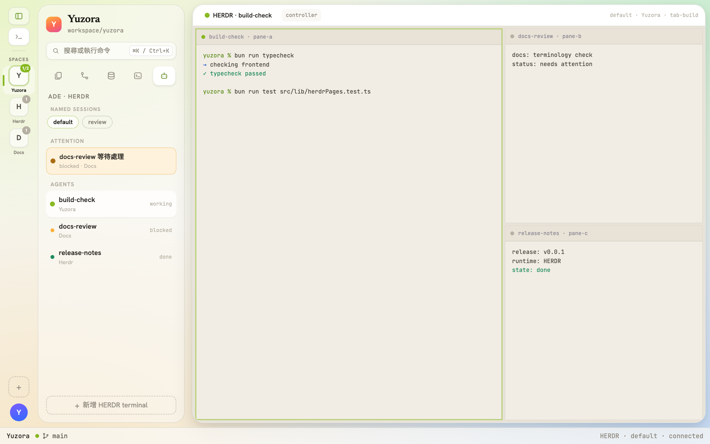

開一個 Space
掛上專案 checkout 或 linked worktree，Space rail 上一格就位。
開源桌面 ADE · HERDR RUNTIME
Yuzora 把 Spaces、Sessions、Agents 與編輯器、終端機、SSH、資料庫收進同一個桌面工作面；介面之下，是同一套 HERDR runtime。
已辨識：macOS · Universal已辨識：Windows · x64僅支援 macOS 與 Windows 桌面裝置此裝置架構尚未提供安裝檔請從下方選擇你的平台

以開源技術打造
掛上專案 checkout 或 linked worktree，Space rail 上一格就位。
agents 直接跑在 HERDR terminal 上，同一個 Session 集中收納。
需要介入的事自己浮上來，處理完就回到主線。
Space rail、named Sessions、Attention 與 BSP terminal pages 同屏運轉；每個 Yuzora page 對應一個 HERDR tab。
SSH shell 與 SFTP 雙欄傳輸；SQLite、PostgreSQL 與 MSSQL 連線、物件樹與 SQL 查詢，結果直接分頁呈現。
終端機跑 cherry-pick 與 push，git graph 即時長出新節點，main 與 origin/main 的 refs 跟著移動。
搜尋或執行命令，鍵盤不離手。往下打幾個字試試。
CodeMirror 6 分頁編輯、左右分割；跳至定義與工作區符號搜尋。
啟動或接上 dev server，原生 webview 直接疊在面板上。
新版本從 GitHub Releases 自動送達。
繁體中文與英文，整個 app 一鍵切換。這個網頁也是。
ADE surface 負責呈現與指令；狀態、終端與 agents 一律活在 HERDR runtime。關掉視窗，工作照跑；重開視窗，一切接得回來。
呈現與指令，關掉也不影響工作
狀態、終端與 agents 的唯一權威
typed IPC，mutation 依 capability 把關